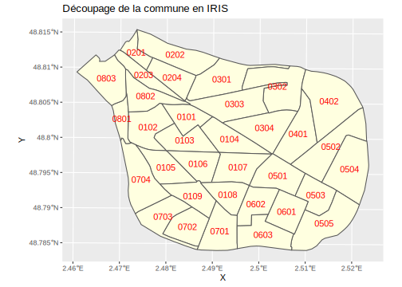

Chapitre 2 Agrégation socio-spatiale
2.1 Objectifs
L’objectif de cette section est de procéder à des agrégations sociales et spatiales des données individuelles afin de pouvoir ensuite réaliser des cartes.
2.1.1 Ménages ou habitants ?
La principale difficulté consistera à choisir les bonnes pondérations selon que l’on souhaite :
- Travailler sur les ménages : par exemple pour connaître le nombre de ménages ayant 0, 1, 2 ou plus de 3 automobiles.
- Travailler sur les habitants : par exemple pour connaître le nombre de personnes ayant plus de 6 ans.
2.1.2 Département, commune ou IRIS ?
On devra aussi s’intéresser aux variables géographiques disponibles pour réaliser des agrégations spatiales différentes selon que l’on souhaite travailler :
- à l’échelle de l’ensemble du département : par exemple, quel est le taux de chômage des actifs du Val de Marne
- à l’échelle des communes : par exemple, quel est le taux de chômage des actifs de Sucy-en-Brie
- à l’échelle des IRIS infra-communaux : par exemple, quel est le taux de chômage des actifs du quartier de la Fossse Rouge à Sucy-en Brie.
2.1.3 Tableaux de contingence et tableaux de profil
Enfin, on fera attention de ne pas mélanger les stocks et les taux qui correspondent à des tableaux et des variables de nature différente tant pour l’analyse statistique que pour la cartogaphie.
- Un tableau de contingence est un tableau de comptage d’individus (habitants ou ménages) dans lequel on peut effectuer les sommes en ligne ou en colonnes. Par exemple, on peut dénombrer les actifs en fonction de leur catégorie socio-professionnelle et de leur commune de résidence. Chacune des cases du tableau correspondra à un nombre d’actifs.
- Un tableau de profil (ou de pourcentage) est une transformation du tableau de contingence permettant de calculer des pourcentages en ligne ou en colonne. Dans l’exemple précédent, si les lignes correspondent aux communes et les colonnes aux CSP, on peut produire soit un tableau des profils en lignes (pourcentage des habitants d’une commune travaillant dans une CSP), soit un tableau des profils en colonnes (pourcentage des membres d’une CSP résidant dans une commune).
2.1.4 Packages utilisés
Nous allons nous limiter à un nombre minimum de package au cours de cette première séance dans la mesure où très peu de réalisations cartographiques seront effectuées.
- dplyr : pour la manipulation des tableaux et leur agrégation (inutile de charger l’ensemble du package tidyverse)
- knitr : pour afficher proprement les tableaux de résultats
- ggplot2 : pour visualiser les résultats sous formes de graphiques
- sf : pour manipuler les données cartographiques et les agréger
2.1.5 Choix d’une commune
En prévision du projet, chaque étudiant devra choisir une commune qui fera l’objet d’analyse ciblées. Cette commune devra respecter les conditions suivantes :
- Présence d’au moins 10 IRIS
- Population supérieure à 20 000 habitants
- Diversité sociale importante avec mélange de quartiers à profils différents
Une fois identifiée la commune cible chaque étudiant devra trouver son code officiel géographique en tapant son nom sur la page web suivante :
https://www.insee.fr/fr/statistiques/zones/2011101
Voici une première liste de communes proposées aux étudiants :
- Champigny-sur-Marne (94017)
- Créteil (94028)
- Fontenay-sous-Bois (94033)
- Ivry-sur-Seine (94041)
- Saint-Maur-des-Fossés (94068)
- Vitry-sur-Seine (94081)
- Vincennes (94080)
- Villejuif (94076)
Le cours prendra quant à lui l’exemple de la commune de Sucy-en-Brie (94071)
2.2 Fichier de référence
Nous allons apprendre dans un premier temps à calculer pour une commune un fichier de référence comportant le nombre d’habitants et le nombre de ménage de chacun des quartiers IRIS. Puis nous y ajouerons le contour géomérique des quartiers IRIS afin de pouvoir réaliser des cartes par la suite.
2.2.1 Nombre total d’habitants et de ménages de la commune
Comme le recensement n’est pas exhaustif, nous devrons pondérer tous nos calculs par la variable IPONDI qui est définie de la façon suivante dans les métadonnées :
| COD_VAR | LIB_VAR | COD_MOD | LIB_MOD | TYPE_VAR | LONG_VAR |
|---|---|---|---|---|---|
| IPONDI | Poids de l’individu | CHAR | 17.15 |
2.2.1.1 nombre d’habitants de la commune
On commence par créer la variable COM qui n’existe pas mais qui est contenue dans le code IRIS, puis on regroupe par commune et enfin on effectue la somme.
indiv %>% mutate(COM = substr(IRIS,1,5)) %>%
filter(COM == "94071") %>%
summarise(nbhab = sum(IPONDI))# A tibble: 1 x 1
nbhab
<dbl>
1 26479.On constate que la commune de Sucy-en-Brie (94071)* a une population estimée de 26479.068 habitants.
2.2.1.2 nombre de ménage de la commune
Pour calculer le nombre de ménages, il faut construire un tablean menag ne comportant que les personnes de références. Nous allons devoir utiliser pour cela la variable LPRM dont on affiche les métadonnées :
| COD_VAR | LIB_VAR | COD_MOD | LIB_MOD | TYPE_VAR | LONG_VAR |
|---|---|---|---|---|---|
| LPRM | Lien à la personne de référence du ménage | 1 | Personne de référence du ménage | CHAR | 1 |
| LPRM | Lien à la personne de référence du ménage | 2 | Conjoint de la personne de référence du ménage | CHAR | 1 |
| LPRM | Lien à la personne de référence du ménage | 3 | Enfant de la personne de référence du ménage ou de son conjoint | CHAR | 1 |
| LPRM | Lien à la personne de référence du ménage | 4 | Petit-enfant | CHAR | 1 |
| LPRM | Lien à la personne de référence du ménage | 5 | Ascendant | CHAR | 1 |
| LPRM | Lien à la personne de référence du ménage | 6 | Autre parent | CHAR | 1 |
| LPRM | Lien à la personne de référence du ménage | 7 | Ami | CHAR | 1 |
| LPRM | Lien à la personne de référence du ménage | 8 | Pensionnaire ou sous-locataire | CHAR | 1 |
| LPRM | Lien à la personne de référence du ménage | 9 | Domestique ou salarié logé | CHAR | 1 |
| LPRM | Lien à la personne de référence du ménage | Z | Hors logement ordinaire | CHAR | 1 |
Ce tableau montre que la modalité “1” correspond précisément aux personnes de références. Il faut donc filtrer le tableau des individus sur la condition LPRF==1pour ne garder que les ménages.On peut alors dénombrer les ménages en appliquant exactement la même procédure de pondération que pour la population :
indiv %>% filter(LPRM == 1) %>%
mutate(COM = substr(IRIS,1,5)) %>%
filter(COM == "94071") %>%
summarise(nbmen = sum(IPONDI))# A tibble: 1 x 1
nbmen
<dbl>
1 10716.D’après le tableau obtenu, il y a 7466.732 ménages (ordinaires) dans la commune de Sucy-en-Brie en 2017
2.2.1.3 Vérification
On se rend sur le site de l’INSEE pour vérifier que les deux chiffres correspondent bien approximativement aux résultats du recensement de 2017
2.2.2 Nombre d’habitants et de ménages par IRIS
On se propose maintenant d’établir un tableau du nombre d’habitant et du nombre de ménages d’une commune par quartier IRIS.
2.2.2.1 Nombre d’habitants d’une commune par IRIS
On calcule le nombre d’habitants par IRIS à l’aide de l’instruction group_by du package dplyr:
tabpop <- indiv %>% mutate(COM = substr(IRIS,1,5)) %>%
filter(COM == "94071") %>%
group_by (IRIS) %>%
summarise(nbhab = sum(IPONDI))`summarise()` ungrouping output (override with `.groups` argument)| IRIS | nbhab |
|---|---|
| 940710101 | 2150.932 |
| 940710102 | 2203.946 |
| 940710103 | 2843.362 |
| 940710104 | 2630.590 |
| 940710105 | 3006.213 |
| 940710106 | 2368.138 |
| 940710107 | 2545.304 |
| 940710108 | 2853.129 |
| 940710109 | 2527.575 |
| 940710110 | 1524.599 |
| 940710111 | 1825.280 |
2.2.2.2 Nombre de ménages d’une commune par IRIS
On calcule le nombre de ménages par IRIS
tabmen <- indiv %>% filter(LPRM == 1) %>%
mutate(COM = substr(IRIS,1,5)) %>%
filter(COM == "94071") %>%
group_by (IRIS) %>%
summarise(nbmen = sum(IPONDI))`summarise()` ungrouping output (override with `.groups` argument)Puis on effectue la jointure des deux tableaux et on crée une nouvelle variable décrivant le nombre moyen de personnes par ménage
Joining, by = "IRIS"| IRIS | nbhab | nbmen | tailmen |
|---|---|---|---|
| 940710101 | 2151 | 812 | 2.65 |
| 940710102 | 2204 | 822 | 2.68 |
| 940710103 | 2843 | 1049 | 2.71 |
| 940710104 | 2631 | 1116 | 2.36 |
| 940710105 | 3006 | 1287 | 2.34 |
| 940710106 | 2368 | 867 | 2.73 |
| 940710107 | 2545 | 966 | 2.63 |
| 940710108 | 2853 | 1034 | 2.76 |
| 940710109 | 2528 | 1289 | 1.96 |
| 940710110 | 1525 | 677 | 2.25 |
| 940710111 | 1825 | 795 | 2.30 |
2.2.3 Ajout de la géométrie
Notre tableau des IRIS ne comporte pas actuellement de données géométriques permettant la cartographie et on n’y trouve pas non plus le nom ds IRIS. Nous allons donc extraire ces informations du fichier cartographique. Puis nous allons fusionner les deux fichiers pour faire un objet de type sf(spatial features) qui pourra être facilement utilisé par la suite pour réaliser des cartes.
2.2.3.1 Extraction des IRIS de la commune
On charge le fichier des IRIS du départmeent et on extrait de celui-ci les contours IRIS de la commune qui nous intéresse.
mymap <- map %>% filter(INSEE_COM == "94071") %>%
select(CODE_IRIS, NOM_IRIS, TYP_IRIS,NOM_COM, geometry)
head(mymap)# A tibble: 6 x 5
CODE_IRIS NOM_IRIS TYP_IRIS NOM_COM geometry
<chr> <chr> <chr> <chr> <MULTIPOLYGON [m]>
1 940710107 Notre Dame ~ H Sucy-en~ (((667480.7 6851728, 667498 6851748,~
2 940710103 La Cite Ver~ H Sucy-en~ (((665121.5 6852886, 665122.9 685287~
3 940710102 La Fosse Ro~ H Sucy-en~ (((665788.4 6853098, 665788.8 685309~
4 940710111 Gare Varenn~ H Sucy-en~ (((664052.9 6852830, 664055.5 685282~
5 940710109 Le Centre H Sucy-en~ (((664318.9 6852899, 664337.1 685290~
6 940710101 Le Grand Val H Sucy-en~ (((664052.9 6852830, 664050.3 685283~2.2.3.2 Ajout des coordonnées des centres d’IRIS
On détermine les centres des quartiers IRIS à l’aide d’un combinaison de fonctions SF et on les ajoute au fichier
Warning in st_centroid.sf(mymap): st_centroid assumes attributes are constant
over geometries of x| CODE_IRIS | NOM_IRIS | TYP_IRIS | NOM_COM | X | Y | geometry |
|---|---|---|---|---|---|---|
| 940710107 | Notre Dame … Bruyeres | H | Sucy-en-Brie | 667852.4 | 6851082 | MULTIPOLYGON (((667480.7 68… |
| 940710103 | La Cite Verte | H | Sucy-en-Brie | 664869.7 | 6852686 | MULTIPOLYGON (((665121.5 68… |
| 940710102 | La Fosse Rouge | H | Sucy-en-Brie | 665269.2 | 6853014 | MULTIPOLYGON (((665788.4 68… |
| 940710111 | Gare Varennes Zi | H | Sucy-en-Brie | 663547.5 | 6852295 | MULTIPOLYGON (((664052.9 68… |
| 940710109 | Le Centre | H | Sucy-en-Brie | 664634.0 | 6852430 | MULTIPOLYGON (((664318.9 68… |
| 940710101 | Le Grand Val | H | Sucy-en-Brie | 664435.3 | 6853178 | MULTIPOLYGON (((664052.9 68… |
| 940710108 | Le Petiti Val … Clos de Ville | H | Sucy-en-Brie | 664604.3 | 6851645 | MULTIPOLYGON (((663926.1 68… |
| 940710105 | La Procession … Fort | H | Sucy-en-Brie | 665509.4 | 6852035 | MULTIPOLYGON (((665765.1 68… |
| 940710110 | Berges Noyers Pv | H | Sucy-en-Brie | 664124.5 | 6853470 | MULTIPOLYGON (((664052.9 68… |
| 940710106 | Le Plateau-Parc | H | Sucy-en-Brie | 666195.3 | 6851330 | MULTIPOLYGON (((667480.7 68… |
| 940710104 | Les Monrois … Fdv | H | Sucy-en-Brie | 665758.2 | 6852471 | MULTIPOLYGON (((666202.7 68… |
2.2.3.3 Visualisation de la carte
On visualise la carte des iris à l’aide des fonctions geom_sf et geom_textdu package ggplot2
ggplot(mymap) +
geom_sf(fill = "lightyellow") +
geom_text(aes(x=X, y=Y, label = substr(CODE_IRIS,6,9)), colour = "red") +
ggtitle("Découpage de la commune de Sucy-en-Brie en IRIS")
2.2.3.4 Jointure des deux fichiers
On va maintenant effectuer la joindure avec le tableau de données, mais en faisant attention à recoder la variable IRIS du fichier de données en CODE_IRIS pour assurer la jointure.
Joining, by = "CODE_IRIS"| CODE_IRIS | nbhab | nbmen | tailmen | NOM_IRIS | TYP_IRIS | NOM_COM | X | Y | geometry |
|---|---|---|---|---|---|---|---|---|---|
| 940710101 | 2150.932 | 812.2436 | 2.648137 | Le Grand Val | H | Sucy-en-Brie | 664435.3 | 6853178 | MULTIPOLYGON (((664052.9 68… |
| 940710102 | 2203.946 | 822.4033 | 2.679885 | La Fosse Rouge | H | Sucy-en-Brie | 665269.2 | 6853014 | MULTIPOLYGON (((665788.4 68… |
| 940710103 | 2843.362 | 1048.7700 | 2.711140 | La Cite Verte | H | Sucy-en-Brie | 664869.7 | 6852686 | MULTIPOLYGON (((665121.5 68… |
| 940710104 | 2630.590 | 1115.8427 | 2.357492 | Les Monrois … Fdv | H | Sucy-en-Brie | 665758.2 | 6852471 | MULTIPOLYGON (((666202.7 68… |
| 940710105 | 3006.213 | 1287.2656 | 2.335348 | La Procession … Fort | H | Sucy-en-Brie | 665509.4 | 6852035 | MULTIPOLYGON (((665765.1 68… |
| 940710106 | 2368.138 | 867.4955 | 2.729856 | Le Plateau-Parc | H | Sucy-en-Brie | 666195.3 | 6851330 | MULTIPOLYGON (((667480.7 68… |
| 940710107 | 2545.304 | 966.4696 | 2.633610 | Notre Dame … Bruyeres | H | Sucy-en-Brie | 667852.4 | 6851082 | MULTIPOLYGON (((667480.7 68… |
| 940710108 | 2853.129 | 1034.3876 | 2.758278 | Le Petiti Val … Clos de Ville | H | Sucy-en-Brie | 664604.3 | 6851645 | MULTIPOLYGON (((663926.1 68… |
| 940710109 | 2527.575 | 1288.7402 | 1.961276 | Le Centre | H | Sucy-en-Brie | 664634.0 | 6852430 | MULTIPOLYGON (((664318.9 68… |
| 940710110 | 1524.599 | 677.4526 | 2.250488 | Berges Noyers Pv | H | Sucy-en-Brie | 664124.5 | 6853470 | MULTIPOLYGON (((664052.9 68… |
| 940710111 | 1825.280 | 795.1780 | 2.295436 | Gare Varennes Zi | H | Sucy-en-Brie | 663547.5 | 6852295 | MULTIPOLYGON (((664052.9 68… |
2.2.4 Automatisation du travail
Nous avons maintenant bien décomposé toutes les étapes permettant de créer le fichier de référence pour une commune précise. Il nous reste à automatiser le processus pour une commune quelconque. Nous allons pour cela créer une fonction qui permet de créer pour une commune quelconque son fichier de référence.
2.2.4.1 Ecriture de la fonction
Il suffit de reprendre tous les programmes précédents en remplaçant le code 94370 par un argument codecom de la fonction qu’on va appeler mapdon() :
mapdon <- function(indiv = indiv,
map = map,
codecom = "94370")
{
# (1) Création du tableau de population par IRIS
tabpop <- indiv %>% mutate(COM = substr(IRIS,1,5)) %>%
filter(COM == codecom) %>%
group_by (IRIS) %>%
summarise(nbhab = sum(IPONDI))
# (2) Création du tableau de ménage par IRIS
tabmen <- indiv %>% filter(LPRM == 1) %>%
mutate(COM = substr(IRIS,1,5)) %>%
filter(COM == codecom) %>%
group_by (IRIS) %>%
summarise(nbmen = sum(IPONDI))
# (3) Fusion des tableaux de données
tabdon <- left_join(tabpop, tabmen) %>%
mutate(tailmen = nbhab/nbmen)
# (4) Extraction du fonds de carte des IRIS
mymap <- map %>% filter(INSEE_COM == codecom) %>%
select(CODE_IRIS, NOM_IRIS, TYP_IRIS,NOM_COM, geometry)
# (5) Ajout des coordonnées des centres d'IRIS
coo<-as.data.frame(st_coordinates(st_centroid(mymap)))
mymap <-cbind(mymap,coo)
# (6) Fusion des données et de la géométrie
mapdon <- tabdon %>% rename(CODE_IRIS = IRIS) %>%
left_join(mymap)
# (7) Conversion au format sf
mapdon<-st_as_sf(mapdon)
# (7) Sortie du résultat
return(mapdon)
}2.2.4.2 Test de la fonction
Essayons maintenant d’appliquer notre fonction à une autre commune comme Saint-Maur-des-Fossés (94068). Il suffit pour cela de lui fournir les trois paramètres correspondant au tableau de données individuelles, au fonds de carte et au code de la commune
# indiv <- readRDS("data/indiv2017.Rdata")
# map <-readRDS("data/map_iris.Rdata")
stmaur <- mapdon(indiv=indiv,
map = map,
codecom = "94068")`summarise()` ungrouping output (override with `.groups` argument)
`summarise()` ungrouping output (override with `.groups` argument)Joining, by = "IRIS"Warning in st_centroid.sf(mymap): st_centroid assumes attributes are constant
over geometries of xJoining, by = "CODE_IRIS"[1] "sf" "tbl_df" "tbl" "data.frame"| CODE_IRIS | nbhab | nbmen | tailmen | NOM_IRIS | TYP_IRIS | NOM_COM | X | Y | geometry |
|---|---|---|---|---|---|---|---|---|---|
| 940680101 | 2354.834 | 1180.1101 | 1.995436 | Adamville 1 | H | Saint-Maur-des-Fossés | 662121.0 | 6856007 | MULTIPOLYGON (((662332.4 68… |
| 940680102 | 2615.027 | 1204.4229 | 2.171187 | Adamville 2 | H | Saint-Maur-des-Fossés | 661513.7 | 6855845 | MULTIPOLYGON (((661318.1 68… |
| 940680103 | 2630.544 | 1307.0014 | 2.012656 | Adamville 3 | H | Saint-Maur-des-Fossés | 662092.7 | 6855636 | MULTIPOLYGON (((661797 6855… |
| 940680104 | 2395.176 | 1156.3000 | 2.071414 | Adamville 4 | H | Saint-Maur-des-Fossés | 662802.3 | 6855656 | MULTIPOLYGON (((662332.4 68… |
| 940680105 | 2213.094 | 967.9966 | 2.286263 | Adamville 5 | H | Saint-Maur-des-Fossés | 661794.9 | 6855206 | MULTIPOLYGON (((661810.5 68… |
| 940680106 | 2561.655 | 1264.6149 | 2.025640 | Adamville 6 | H | Saint-Maur-des-Fossés | 662302.9 | 6855263 | MULTIPOLYGON (((662285.5 68… |
On peut visualiser la carte et ses codes :
ggplot(stmaur) +
geom_sf(fill = "lightyellow") +
geom_text(aes(x=X, y=Y, label = substr(CODE_IRIS,6,9)), colour = "red") +
ggtitle("Découpage de la commune en IRIS") 
Et sauvegarder le résultat s’il est correct :